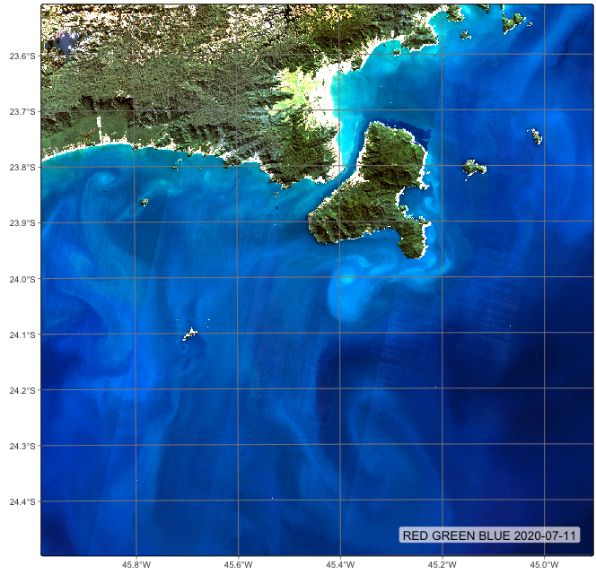
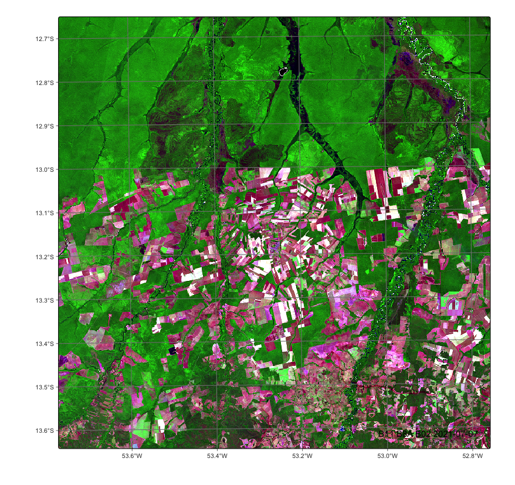
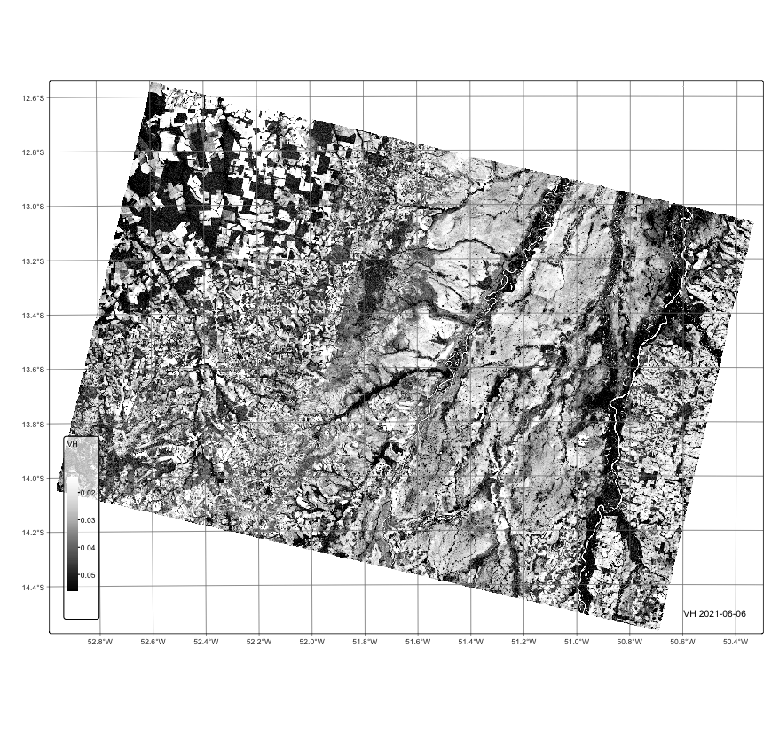
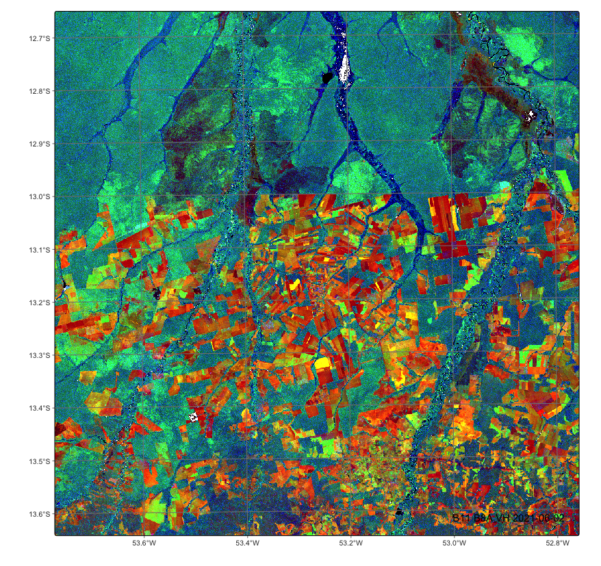
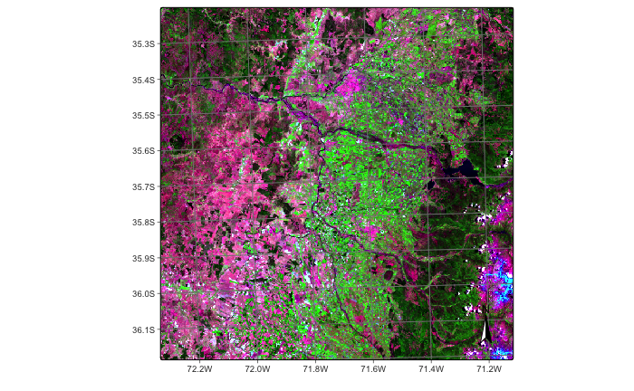
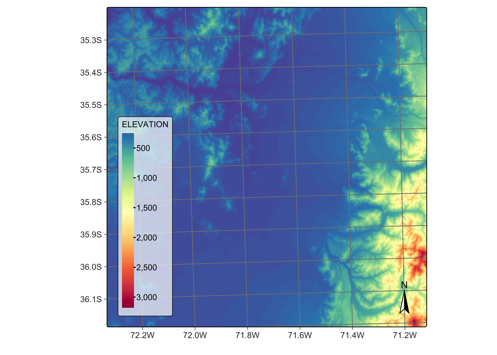

6 Merging multi-source EO data cubes
Configurations to run this chapter
# load "pysits" library
from pysits import *
from pathlib import Path
# set tempdir if it does not exist
tempdir_py = Path.home() / "sitsbook/tempdir/Python/dc_merge"
tempdir_py.mkdir(parents=True, exist_ok=True)6.1 Introduction
This section describes the process of merging collections from different sources. There are many instances when users want to combine different data sources, including:
- Combine Sentinel-2A and Sentinel-2B when their collections are stored separately.
- Merge collections of different Landsat satellites.
- Join Sentinel-1 and Sentinel-2 to increase the number of attributes of time series.
- Combine Landsat and Sentinel HLS (Harmonized Landsat-Sentinel) collections.
- Combine Sentinel-2 cubes with digital elevation models.
Except in the cases of combining DEMs with Sentinel-2 cubes, and joining Sentinel-1 and Sentinel-2, the other cases require a combination of two operations: sits_merge() and sits_regularize(). The first function combines the timelines of the data cubes, in most cases producing to a non-regular data cube. For this reason, users have to use sits_regularize() to produce a multi-source regular cube.
6.2 Merging HLS Landsat and Sentinel-2 collections
Images from the HLS Landsat and Sentinel-2 collections are accessed separately and can be combined with sits_merge(). We first create two ARD collections, one for HLS Sentinel-2 and one for HLS Landsat over the same area. The two cubes are then merged.
# define a region of interest
roi <- c(lon_min = -45.6422, lat_min = -24.0335,
lon_max = -45.0840, lat_max = -23.6178)
# Retrieve an HLS Sentinel-2 collection
hls_cube_s2 <- sits_cube(
source = "HLS",
collection = "HLSS30",
roi = roi,
bands = c("BLUE", "GREEN", "RED", "CLOUD"),
start_date = as.Date("2020-06-01"),
end_date = as.Date("2020-09-01"),
progress = FALSE
)
# create a cube from the HLS Landsat collection
hls_cube_l8 <- sits_cube(
source = "HLS",
collection = "HLSL30",
roi = roi,
bands = c("BLUE", "GREEN", "RED", "CLOUD"),
start_date = as.Date("2020-06-01"),
end_date = as.Date("2020-09-01"),
progress = FALSE
)
# merge the Sentinel-2 and Landsat-8 cubes
hls_cube_merged <- sits_merge(hls_cube_s2, hls_cube_l8)# define a region of interest
roi = dict(lon_min = -45.6422, lat_min = -24.0335,
lon_max = -45.0840, lat_max = -23.6178)
# Retrieve an HLS Sentinel-2 collection
hls_cube_s2 = sits_cube(
source = "HLS",
collection = "HLSS30",
roi = roi,
bands = ("BLUE", "GREEN", "RED", "CLOUD"),
start_date = "2020-06-01",
end_date = "2020-09-01",
progress = False
)
# create a cube from the HLS Landsat collection
hls_cube_l8 = sits_cube(
source = "HLS",
collection = "HLSL30",
roi = roi,
bands = ("BLUE", "GREEN", "RED", "CLOUD"),
start_date = "2020-06-01",
end_date = "2020-09-01",
progress = False
)
# merge the Sentinel-2 and Landsat-8 cubes
hls_cube_merged = sits_merge(hls_cube_s2, hls_cube_l8)Comparing the timelines of the original cubes and the merged one, one can see the benefits of the merged collection for time series data analysis.
HLS Sentinel-2 timeline
# Timeline of the Sentinel-2 cube
sits_timeline(hls_cube_s2) [1] "2020-06-15" "2020-06-20" "2020-06-25" "2020-06-30" "2020-07-05"
[6] "2020-07-10" "2020-07-20" "2020-07-25" "2020-08-04" "2020-08-09"
[11] "2020-08-14" "2020-08-19" "2020-08-24" "2020-08-29"# Timeline of the Sentinel-2 cube
sits_timeline(hls_cube_s2)['2020-06-15', '2020-06-20', '2020-06-25', '2020-06-30', '2020-07-05', '2020-07-10', '2020-07-20', '2020-07-25', '2020-08-04', '2020-08-09', '2020-08-14', '2020-08-19', '2020-08-24', '2020-08-29']HLS Landsat-8 timeline
# Timeline of the Landsat-8 cube
sits_timeline(hls_cube_l8)[1] "2020-06-09" "2020-06-25" "2020-07-11" "2020-07-27" "2020-08-12"
[6] "2020-08-28"# Timeline of the Landsat-8 cube
sits_timeline(hls_cube_l8)['2020-06-09', '2020-06-25', '2020-07-11', '2020-07-27', '2020-08-12', '2020-08-28']Merged timeline
# Timeline of the merged cube
sits_timeline(hls_cube_merged) [1] "2020-06-09" "2020-06-15" "2020-06-20" "2020-06-25" "2020-06-30"
[6] "2020-07-05" "2020-07-10" "2020-07-11" "2020-07-20" "2020-07-25"
[11] "2020-07-27" "2020-08-04" "2020-08-09" "2020-08-12" "2020-08-14"
[16] "2020-08-19" "2020-08-24" "2020-08-28" "2020-08-29"# Timeline of the merged cube
sits_timeline(hls_cube_merged)['2020-06-09', '2020-06-15', '2020-06-20', '2020-06-25', '2020-06-30', '2020-07-05', '2020-07-10', '2020-07-11', '2020-07-20', '2020-07-25', '2020-07-27', '2020-08-04', '2020-08-09', '2020-08-12', '2020-08-14', '2020-08-19', '2020-08-24', '2020-08-28', '2020-08-29']The merged cube contains a denser timeline. However, for further use in sits, we need to create a regularized cube to obtain a composite with less clouds. To make processing easier, we copy the original data to a local directory.
# define the output directory
tempdir_r_hls <- "~/sitsbook/tempdir/R/dc_merge/hls"
# set output dir if it does not exist
dir.create(tempdir_r_hls, showWarnings = FALSE)
# copy the hls cube for a local directory for faster regularization
cube_hls_local <- sits_cube_copy(
cube = hls_cube_merged,
output_dir = tempdir_r_hls
)# define the output directory
tempdir_py_hls = tempdir_py / "hls"
# set output dir if it does not exist
tempdir_py_hls.mkdir(parents=True, exist_ok=True)
# copy the hls cube for a local directory for faster regularization
cube_hls_local = sits_cube_copy(
cube = hls_cube_merged,
output_dir = tempdir_py_hls
)Copying the merged HLS data to a local directory is an optional procedure, which is recommended in the case of optical data because it speeds up regularization. After the regular data cube is built, these files can be removed. In this example, we select a period of 16-days and keep the original 30-meter resolution of the HLS data for the resulting regular cube.
# define the output directory for the regularized images
tempdir_r_hls_reg <- "~/sitsbook/tempdir/R/dc_merge/hls_reg"
# set output dir if it does not exist
dir.create(tempdir_r_hls_reg, showWarnings = FALSE)
# regularizing a harmonized Landsat-Sentinel data cube
cube_hls_reg <- sits_regularize(
cube = cube_hls_local,
period = "P16D",
res = 30,
output_dir = tempdir_r_hls_reg
)
plot(cube_hls_local, date = "2020-07-11")# define the output directory for the regularized images
tempdir_py_hls_reg = tempdir_py / "hls_reg"
# set output dir if it does not exist
tempdir_py_hls_reg.mkdir(parents=True, exist_ok=True)
# regularizing a harmonized Landsat-Sentinel data cube
cube_hls_reg = sits_regularize(
cube = cube_hls_local,
period = "P16D",
res = 30,
output_dir = tempdir_py_hls_reg
)
# plot the cube
plot(cube_hls_local, date = "2020-07-11")
6.3 Merging Sentinel-1 and Sentinel-2 images
To combine Sentinel-1 and Sentinel-2 data, the first step is to produce regular data cubes for the same MGRS tiles with compatible time steps. The timelines do not have to be exactly the same, but they need to be close enough so that matching is acceptable and have the same number of time steps. This example uses the regular Sentinel-1 cube for tile “22LBL” produced in the previous sections. The next step is to produce a regular Sentinel-2 data cube for the same tile and regularize it. We start by defining a non-regular data cube from Planetary Computer collections.
# define the output directory
cube_s2 = sits_cube(
source = "MPC",
collection = "SENTINEL-2-L2A",
bands = ("B02", "B8A", "B11", "CLOUD"),
tiles = ("22LBL"),
start_date = "2021-06-01",
end_date = "2021-09-30"
)
plot(cube_s2, red = "B11", green = "B8A", blue = "B02", date = "2021-07-07")
The next step is to create a regular data cube for tile “20LBL” and Sentinel-2 data.
if (!file.exists("./tempdir/R/dc_merge/s2_opt"))
dir.create("./tempdir/R/dc_merge/s2_opt")
tempdir_r_s2_opt <- "./tempdir/R/dc_merge/s2_opt"
# define the output directory
cube_s2_reg <- sits_regularize(
cube = cube_s2,
period = "P16D",
res = 40,
tiles = c("22LBL"),
memsize = 12,
multicores = 6,
output_dir = tempdir_r_s2_opt
)tempdir_py_s2_opt = tempdir_py / "s2_opt"
tempdir_py_s2_opt.mkdir(parents=True, exist_ok=True)
# define the output directory
cube_s2_reg = sits_regularize(
cube = cube_s2,
period = "P16D",
res = 40,
tiles = ("22LBL"),
memsize = 12,
multicores = 6,
output_dir = tempdir_py_s2_opt
)We then create a regular data cube of Sentinel-1 images covering the same MGRS tile
# create an RTC cube from MPC collection for a region in Mato Grosso, Brazil.
cube_s1_rtc <- sits_cube(
source = "MPC",
collection = "SENTINEL-1-RTC",
bands = c("VV", "VH"),
orbit = "descending",
tiles = c("22LBL"),
start_date = "2021-06-01",
end_date = "2021-10-01"
)
plot(cube_s1_rtc, band = "VH", palette = "Greys", scale = 0.7)# create an RTC cube from MPC collection for a region in Mato Grosso, Brazil.
cube_s1_rtc = sits_cube(
source = "MPC",
collection = "SENTINEL-1-RTC",
bands = ("VV", "VH"),
orbit = "descending",
tiles = ("22LBL"),
start_date = "2021-06-01",
end_date = "2021-10-01"
)
plot(cube_s1_rtc, band = "VH", palette = "Greys", scale = 0.7)
The next step is to create a regular Sentinel-1 data cube.
# define the output directory
tempdir_r_sar <- "~/sitsbook/tempdir/R/dc_merge/sar"
# set output dir if it does not exist
dir.create(tempdir_r_sar, showWarnings = FALSE)
# create a regular RTC cube from MPC collection for a tile 22LBL.
cube_s1_reg <- sits_regularize(
cube = cube_s1_rtc,
period = "P16D",
res = 40,
tiles = c("22LBL"),
memsize = 12,
multicores = 6,
output_dir = tempdir_r_sar
)
plot(cube_s1_reg, band = "VH", palette = "Greys", scale = 0.7,
dates = c("2021-06-06", "2021-07-24", "2021-09-26"))# define the output directory
tempdir_py_sar = tempdir_py / "sar"
# set output dir if it does not exist
tempdir_py_sar.mkdir(parents=True, exist_ok=True)
# create a regular RTC cube from MPC collection for a tile 22LBL.
cube_s1_reg = sits_regularize(
cube = cube_s1_rtc,
period = "P16D",
res = 40,
tiles = ("22LBL"),
memsize = 12,
multicores = 6,
output_dir = tempdir_py_sar
)
plot(cube_s1_reg, band = "VH", palette = "Greys", scale = 0.7,
dates = ("2021-06-06", "2021-07-24", "2021-09-26"))After creating the two regular cubes, we can merge them. Considering that the timelines are close enough so that the cubes can be combined, we can use the sits_merge function to produce a combined cube. As an example, we show a plot with both radar and optical bands.
# merge Sentinel-1 and Sentinel-2 cubes
cube_s1_s2 <- sits_merge(cube_s2_reg, cube_s1_reg)
# plot a an image with both SAR and optical bands
plot(cube_s1_s2, red = "B11", green = "B8A", blue = "VH")# merge Sentinel-1 and Sentinel-2 cubes
cube_s1_s2 = sits_merge(cube_s2_reg, cube_s1_reg)
# plot a an image with both SAR and optical bands
plot(cube_s1_s2, red = "B11", green = "B8A", blue = "VH")
6.4 Combining multitemporal data cubes with digital elevation models
In many applications, especially in regions with large topographical, soil or climatic variations, is is useful to merge multitemporal data cubes with base information such as digital elevation models (DEM). Merging multitemporal satellite images with digital elevation models (DEMs) offers several advantages that enhance the analysis and interpretation of geospatial data. Elevation data provides an additional to the two-dimensional satellite images, which help to distinguish land use and land cover classes which are impacted by altitude gradients. One example is the capacity to distinguish between low-altitude and high-altitude forests. In case where topography changes significantly, DEM information can improve the accuracy of classification algorithms.
As an example of DEM integration in a data cube, we will consider an agricultural region of Chile which is located in a narrow area close to the Andes. There is a steep gradient so that the cube benefits from the inclusion of the DEM.
s2_cube_19HBA = sits_cube(
source = "MPC",
collection = "SENTINEL-2-L2A",
tiles = "19HBA",
bands = ("B04", "B8A", "B12", "CLOUD"),
start_date = "2021-01-01",
end_date = "2021-03-31"
)
plot(s2_cube_19HBA, red = "B12", green = "B8A", blue = "B04")
Then, we produce a regular data cube to use for classification. In this example, we will use a reduced resolution (30 meters) to expedite processing. In practice, a resolution of 10 meters is recommended.
# set output dir if it does not exist
tempdir_r_s2_19HBA <- "~/sitsbook/tempdir/R/dc_merge/s2_19HBA"
dir.create(tempdir_r_s2_19HBA, showWarnings = FALSE)
# Create a regular data cube
s2_cube_19HBA_reg <- sits_regularize(
cube = s2_cube_19HBA,
period = "P16D",
res = 30,
output_dir = tempdir_r_s2_19HBA
)# set output dir if it does not exist
tempdir_py_s2_19HBA = tempdir_py / "s2_19HBA"
tempdir_py_s2_19HBA.mkdir(parents=True, exist_ok=True)
# Create a regular data cube
s2_cube_19HBA_reg = sits_regularize(
cube = s2_cube_19HBA,
period = "P16D",
res = 30,
output_dir = tempdir_py_s2_19HBA
)The next step is recover the DEM for the area. For this purpose, we will use the Copernicus Global DEM-30, and select the area covered by the tile. As explained in the MPC access section above, the Copernicus DEM tiles are stored as 1\(^\circ\) by 1\(^\circ\) grid. For them to match an MGRS tile, they have to be regularized in a similar way as the Sentinel-1 images, as shown below. To select a DEM, no temporal information is required.
# obtain the DEM cube
dem_cube_19HBA <- sits_cube(
source = "MPC",
collection = "COP-DEM-GLO-30",
bands = "ELEVATION",
tiles = "19HBA"
)# obtain the DEM cube
dem_cube_19HBA = sits_cube(
source = "MPC",
collection = "COP-DEM-GLO-30",
bands = "ELEVATION",
tiles = "19HBA"
)After obtaining the 1\(^\circ\) by 1\(^\circ\) data cube covering the selected tile, the next step is to regularize it. This is done using the sits_regularize() function. This function will produce a DEM which matches exactly the chosen tile.
# set output dir if it does not exist
tempdir_r_dem_19HBA <- "~/sitsbook/tempdir/R/dc_merge/dem_19HBA"
# create directory
dir.create(tempdir_r_dem_19HBA, showWarnings = FALSE)
# regularize DEM cube
dem_cube_19HBA_reg <- sits_regularize(
cube = dem_cube_19HBA,
res = 30,
bands = "ELEVATION",
tiles = "19HBA",
output_dir = tempdir_r_dem_19HBA
)
# plot the DEM reversing the palette
plot(dem_cube_19HBA_reg, band = "ELEVATION", palette = "Spectral", rev = TRUE)# set output dir if it does not exist
tempdir_py_dem_19HBA = tempdir_py / "dem_19HBA"
tempdir_py_dem_19HBA.mkdir(parents=True, exist_ok=True)
# regularize DEM cube
dem_cube_19HBA_reg = sits_regularize(
cube = dem_cube_19HBA,
res = 30,
bands = "ELEVATION",
tiles = "19HBA",
output_dir = tempdir_py_dem_19HBA
)
# plot the DEM reversing the palette
plot(dem_cube_19HBA_reg, band = "ELEVATION", palette = "Spectral", rev = True)
There are two ways to combine multitemporal data cubes with DEM data. The first method takes the DEM as a base information, which is used in combination with the multispectral time series. For exemple, consider a situation of a data cube with 10 bands and 23 time steps, which has a 230-dimensional space. Adding DEM as a base cube will include one dimension to the attribute space. This combination is supported by function sits_add_base_cube. In the resulting cube, the information on the image time series and that of the DEM are stored separately. The data cube metadata will now include a column called base_info.
merged_cube_base <- sits_add_base_cube(s2_cube_19HBA_reg, dem_cube_19HBA_reg)
merged_cube_base$base_info[[1]]# A tibble: 1 × 11
source collection satellite sensor tile xmin xmax ymin ymax crs
<chr> <chr> <chr> <chr> <chr> <dbl> <dbl> <dbl> <dbl> <chr>
1 MPC COP-DEM-GLO-30 TANDEM-X X-band… 19HBA 199980 309780 5.99e6 6.1e6 EPSG…
# ℹ 1 more variable: file_info <list>merged_cube_base = sits_add_base_cube(s2_cube_19HBA_reg, dem_cube_19HBA_reg)
merged_cube_base["base_info"][0] source collection satellite ... ymax crs file_info
0 MPC COP-DEM-GLO-30 TANDEM-X ... 6100000.0 EPSG:32719 fid band date ... ymax ...
[1 rows x 11 columns]Although this combination is conceptually simple, it has drawbacks. Since the attribute space now mixes times series with fixed-time information, the only applicable classification method is Random Forest. Because of the way Random Forest works, not all attributes are used by every decision tree. During the training of each tree, at each node, a random subset of features is selected, and the best split is chosen based on this subset rather than all features. Thus, there may be a significant number of decision trees that do use the DEM attribute. As a result, the effect of the DEM information may be underestimated.
The alternative is to combine the image data cube and the DEM using sits_merge. In this case, the DEM becomes another band. Although it may look peculiar to replicate the DEM many time to build an artificial time series, there are many advantages in doing so. All classification algorithms available in sits (including the deep learning ones) can be used to classify the resulting cube. For cases where the DEM information is particularly important, such organisation places DEM data at a par with other spectral bands. Users are encouraged to compare the results obtained by direct merging of DEM with spectral bands with the method where DEM is taken as a base cube.
merged_cube <- sits_merge(s2_cube_19HBA_reg, dem_cube_19HBA_reg)
merged_cube$file_info[[1]]# A tibble: 24 × 13
fid band date nrows ncols xres yres xmin ymin xmax ymax
<chr> <chr> <date> <dbl> <dbl> <dbl> <dbl> <dbl> <dbl> <dbl> <dbl>
1 1 B04 2021-01-03 3660 3660 30 30 199980 5.99e6 309780 6.1e6
2 1 B12 2021-01-03 3660 3660 30 30 199980 5.99e6 309780 6.1e6
3 1 B8A 2021-01-03 3660 3660 30 30 199980 5.99e6 309780 6.1e6
4 1 ELEVATION 2021-01-03 3660 3660 30 30 199980 5.99e6 309780 6.1e6
5 2 B04 2021-01-19 3660 3660 30 30 199980 5.99e6 309780 6.1e6
6 2 B12 2021-01-19 3660 3660 30 30 199980 5.99e6 309780 6.1e6
7 2 B8A 2021-01-19 3660 3660 30 30 199980 5.99e6 309780 6.1e6
8 1 ELEVATION 2021-01-19 3660 3660 30 30 199980 5.99e6 309780 6.1e6
9 3 B04 2021-02-04 3660 3660 30 30 199980 5.99e6 309780 6.1e6
10 3 B12 2021-02-04 3660 3660 30 30 199980 5.99e6 309780 6.1e6
# ℹ 14 more rows
# ℹ 2 more variables: crs <chr>, path <chr>merged_cube = sits_merge(s2_cube_19HBA_reg, dem_cube_19HBA_reg)
merged_cube["file_info"][0] fid band date ... ymax crs path
0 1 B04 2021-01-03 ... 6100000.0 EPSG:32719 /Users/gilberto/sitsbook/tempdir/Python/dc_mer...
1 1 B12 2021-01-03 ... 6100000.0 EPSG:32719 /Users/gilberto/sitsbook/tempdir/Python/dc_mer...
2 1 B8A 2021-01-03 ... 6100000.0 EPSG:32719 /Users/gilberto/sitsbook/tempdir/Python/dc_mer...
3 1 ELEVATION 2021-01-03 ... 6100000.0 EPSG:32719 /Users/gilberto/sitsbook/tempdir/Python/dc_mer...
4 2 B04 2021-01-19 ... 6100000.0 EPSG:32719 /Users/gilberto/sitsbook/tempdir/Python/dc_mer...
.. .. ... ... ... ... ... ...
19 1 ELEVATION 2021-03-08 ... 6100000.0 EPSG:32719 /Users/gilberto/sitsbook/tempdir/Python/dc_mer...
20 6 B04 2021-03-24 ... 6100000.0 EPSG:32719 /Users/gilberto/sitsbook/tempdir/Python/dc_mer...
21 6 B12 2021-03-24 ... 6100000.0 EPSG:32719 /Users/gilberto/sitsbook/tempdir/Python/dc_mer...
22 6 B8A 2021-03-24 ... 6100000.0 EPSG:32719 /Users/gilberto/sitsbook/tempdir/Python/dc_mer...
23 1 ELEVATION 2021-03-24 ... 6100000.0 EPSG:32719 /Users/gilberto/sitsbook/tempdir/Python/dc_mer...
[24 rows x 13 columns]6.5 Summary
In this chapter, we provide an overview of methods to merge multisource cubes. Combining multisource data is a powerful means of increasing the information available for classification. Users are encouraged to consider what data sets are available for their areas of interest and to try to merge them.